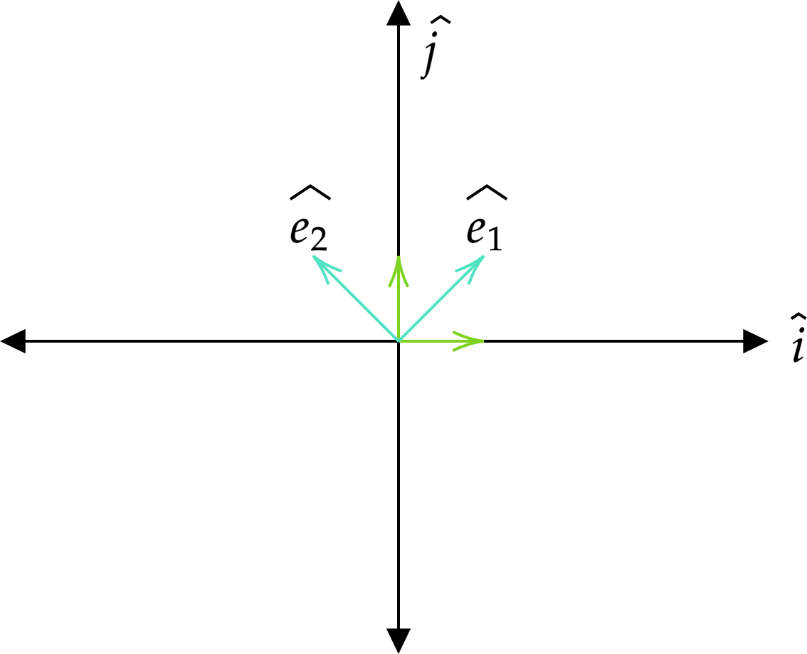
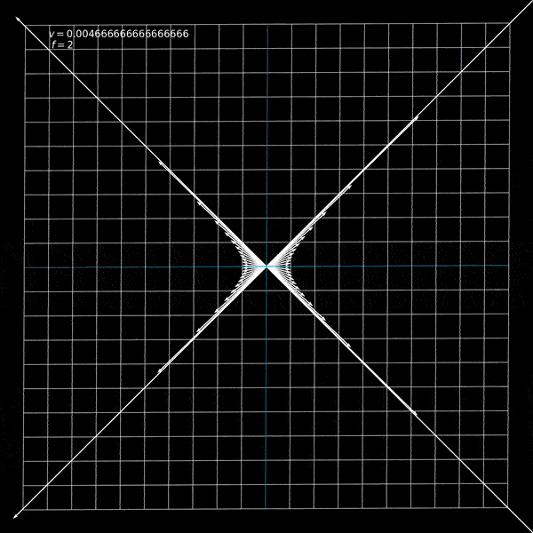

CocoaBlog
CocoaBlog
Visualizing Lorentz Transformations using Python and matplotlib
Wed 01 June 2022The Lorentz transformation is an essential and introductory part of any introductory course on special relativity. It is the function that allows us to take a 4-vector in one basis, usually denoted by an \(S\), and transform it into another basis, \(S^\prime\) , moving at some constant velocity \(v\) with respect to \(S\). If you're at all familiar with the idea of a change of basis, you know that any relationship between two sets of basis can be expressed as a linear map. The Lorentz transform is no different, and is usually expressed with a capital lambda, \(\Lambda\)
Since \(\vec{x} \in \mathbb{R}^4\), \(\Lambda\) can be expressed as a \(4 \times 4\) matrix. However we must be careful here, otherwise we risk running into a lot of confusion when we try to tell a computer how to animate this transformation for us. When we write \(\Lambda\) as a matrix, there is an implicit choice of basis we use. In this article, we will try to figure out what \(\Lambda\) ought to be in a 2 dimensional case (i.e, only \((t,x)\)) and then we will tell Python to animate it for us.
\(\Lambda\) as a Matrix
We know that \(\Lambda\) is an object that takes in a vector and gives us another vector. Objects of this kind are normally rank \((1,1)\) tensors. As a refresher, a rank \((n,m)\) tensor is a linear map that takes in \(n\) vectors and \(m\) covectors (elements of the dual space), and maps all those to some real number (or anything in the corresponding field). If you need a deeper understanding, I would highly recommend you check out Xylyxylyx's excellent video series titled "What is a Tensor?", specifically the one about dual spaces, and if you prefer to read rather than watch, they also have a Patreon, where you get their book with the same content for free! (Go support them! They do awesome work!). Coming back to the Lorentz Transform, I will assume you are convinced that this must be a linear mapping, (and if not, check out this paper), meaning we can write it as follows
But now the question arises, in which basis is the matrix \(\Lambda\) written? We want \(\Lambda\) to take in vectors from the \(S\) basis, and output what this vector's components should be in the \(S^\prime\) basis. Remember, the vector iteself is invarient. It is a physical quantity that does not change regardless of what basis you use. So, how I like to think of a change-of-basis matrix (which I learned from 3blue1brown's excellent Essence of Linear Algebra series) is that it takes in my misconception of a vector and transforms it to what the vector actually is. An example would be illustrative at this point. Consider the vector \(\vec v =(1,1)^\intercal\) (the transpose is there to indicate that this is a vector and not a point) written in the usual euclidian basis \(\hat i\) and \(\hat j\). To be in this basis means that for us, the components \((1,0)^\intercal\) and \((0,1)^\intercal\) are defined to be \(\hat{i}\) and \(\hat{j}\). However, if somebody else uses a basis where their \(e^1=(1,0)^\intercal\) and e^2=\((0,1)^\intercal\) correspond to our \((1,1)^\intercal\) and \((−1,1)^\intercal\), then we need some way to convert our expression of the vector \(\vec{v}\) into theirs.

Visually we know that the vector we call \((1,1)^\intercal\) for us is \((1,0)^\intercal\) for them. So whatever transformation we come up with must map \((1,1)\) to \((1,0)\). Specifically, we want to map \(\hat i\) to \(\hat{e}_1\), and \(\hat j\) to \(\hat e_2\). So our transformation matrix \(T\) must satisfy \(T(\hat i) = \hat e_1\) and \(T(\hat j) = \hat e_2\), and since \(T\) is linear, this is all the information we need to completely specify \(T\)!
However, since \(T\) is defined to act on our basis vectors, it is a matrix that moves our basis vectors to the new basis vectors. But consider this: if you are measuring something and it comes out to be 10 cm, and you want to write it in meters, then your unit (1 cm) is multiplied by 100 (since 100 cm = 1 m), but the length of the object has not changed, so the measurement must be divided by 100 so that your measurement is still unchanged. A more helpful way to write this would be \(10 \times 1\) cm. Here, consider \(1\) cm as our basis, and 10 to be the component of a vector, i.e, something that scales our basis. If we change centimeters to meters, then we must do the inverse to the component so that the underlying vector we are describing stays the same. That is to say, the basis is co-varient with our transformation (changes as the transformation does), however the component is co-varient with the inverse of the transformation, or an easier way to say that is that our component is contra-varient with our transformation. The same idea stands with \(T\). The basis vectors are co-varient with \(T\), however any vector expressed as a linear combination of these basis is contra-varient with \(T\), which means that \(T\) as is actually takes components of vectors expressed in the \(\{\hat e_1, \hat e_2\}\) basis and expresses them in the \(\{\hat i, \hat j\}\) basis.
With all that, keep in mind that \(\Lambda\) takes the components of a 4-vector in \(S\) basis and expresses it in another basis \(S^\prime\) moving with velocity \(v\) with respect to \(S\), and try to answer this question: What is the basis in which \(\Lambda\) must be expressed? \(S\) or \(S^\prime\)? Since \(\Lambda\) takes vectors written in \(S\) to \(S^\prime\), it must take the \(S^\prime\) basis to \(S\) basis. Without going into the actual physics of the derivation, the final matrix \(\Lambda\) is given as follows -
Coding the Transformation
Now that we understand what \(\Lambda\) is telling us, we are ready to actually code it. First, we import the required libraries
import matplotlib.pyplot as plt
from matplotlib.collections import LineCollection
from matplotlib.animation import FuncAnimation
from sys import argv
import numpy as np
I will also set some plot parameters so that it looks nice like 3blue1brown's animations. It's just nice to look at and easy on the eyes. And we also use a function get_arg to get arguments directly from the command line. Using this function, we can define the constants that are needed for this animation.
fprops = {
'family' : 'DejaVu Serif',
'color' : (1,1,1,1),
'weight' : 'normal',
'size': 20
}
def get_arg(flag):
return argv[argv.index(flag)+1]
# Constants to configure the plot
xlim = 10
ylim = 10
target_vel = float(get_arg('-v')) # Fraction of c
duration = float(get_arg('-s')) # Number of frames
filename = get_arg('-f') # Output filename
framerate = 60 # FPS
Next, we need to draw a grid that we will move. Each line in our grid is defined to be drawn from a point \((x_0,y_0)\) to \((x_1, y_1)\). Each line is a list of 2 points and the grid is a list of these pair of points. We also want to color all of them, and highlight the \(x\) and \(y\) axis, which are elements in our grid of the form y_axis = [(0,-ylim), (0, ylim)] and x_axis = [(-xlim, 0), (xlim, 0)], and we set the color for those
grid = [ [(-xlim, y), (xlim, y)] for y in np.arange(-ylim, ylim+1, 1) ] \
+ [ [(x, -ylim), (x, ylim)] for x in np.arange(-xlim, xlim+1, 1) ]
colors = [ (1,1,1,0.7) for i in range(len(grid)) ]
y_axis = grid.index( [(0,-ylim), (0,ylim)] )
x_axis = grid.index( [(-xlim, 0), (xlim, 0)] )
colors[x_axis] = (0,0.52,0.68,0.9)
colors[y_axis] = (0,0.52,0.68,0.9)
We need to now define the Lorentz function acting on a point in our space. Doing so is fairly simple
# Main functions for plotting and animation
c = 1
gamma = lambda vel : 1 / np.sqrt(1 - vel**2 / c ** 2) # Gamma function
def lorentz(point, vel):
L_vel = np.array([ [1, vel],
[vel / c**2, 1] ])
point = np.array(point) * gamma(vel)
return tuple(L_vel.dot(point))
Notice that the velocity will be a fraction of the speed of light since we've set \(c=1\) in line 2 above. I will also add a set of vectors along a hyperbola in the animation so that we can see that these vectors are just moved along the hyperbola and not scaled or stretched.
theta = np.linspace(0, 2*np.pi)
vectorlist = [ (1/np.cos(t), np.tan(t)) for t in theta ]
Now we are ready to define our update function. This function will be passed to matplotlib's FuncAnimation API and it will update our animation. This essentially defines, given your current frame (state), how do we go to the next frame. This function will take in all the objects we want to animate (in this case, I am passing in our grid, the LineCollection object, a dictionary that maps a point to a vector (quiver) object (x, y) : quiver(0, 0, x, y), and a label that shows the current velocity).
def update(frame, grid, linecol, quivers : dict, label):
current_vel = (target_vel / (framerate * duration)) * frame
newgrid = grid[:]
for line_index in range(len(grid)):
line = grid[line_index]
start_point = line[0]
end_point = line[1]
newline = [ lorentz(start_point, current_vel), lorentz(end_point, current_vel) ]
newgrid[line_index] = newline
for point, quiver in quivers.items():
quiver.set_UVC(*lorentz(point, current_vel))
label.set_text("$v = {}$ \n $f = {}$".format(current_vel, frame))
linecol.set_segments(newgrid)
return (linecol,label,)
The current velocity is just proportional to how far into the animation you are. For each line, we apply the lorentz function to both start and end points to find the new line, and we do the same for each quiver object. Lastly, we update the label displaying the current velocity and update the LineCollection object. Matplotlib requires that the update function return the objects we have updated, but for some reason, we don't need to return the quivers but they still update. Lastly, we create a figure and axis, and add stuff to the plot.
# Adding objects to plot
lc = LineCollection(grid, colors=colors)
fig = plt.figure(figsize = (15,15))
ax = fig.gca()
textobj = plt.text(-9, 9, r"$v = {}$".format(target_vel), fontdict=fprops)
plt.subplots_adjust(left=0,right=1,top=1,bottom=0)
ax.add_collection(lc)
quivers = {}
for vector in vectorlist:
quivers[vector] = ax.quiver(0, 0, vector[0], vector[1], color = (1,1,1,1), width = 0.002, scale=1,scale_units='xy')
ax.set_xlim((-5,5))
ax.set_ylim((-5,5))
ax.set_facecolor((0,0,0,1))
ax.autoscale()
And lastly, we just create the animation object and save it to the output file
ani = FuncAnimation(fig, update, frames=int(framerate*duration), fargs=(grid, lc, quivers, textobj,), interval=1000/framerate)
ani.save(filename)
And we get our output! The whole code can be found here. And notice that we could have defined any other matrix in the lorentz function parameterized by a single number, and we can animate it! Try doing some of it!.
